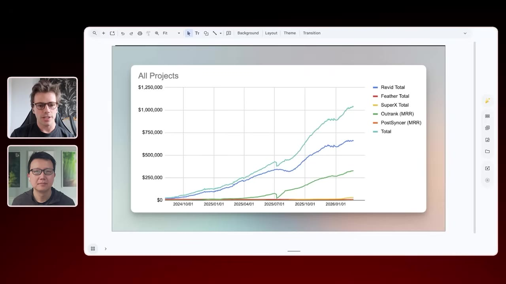
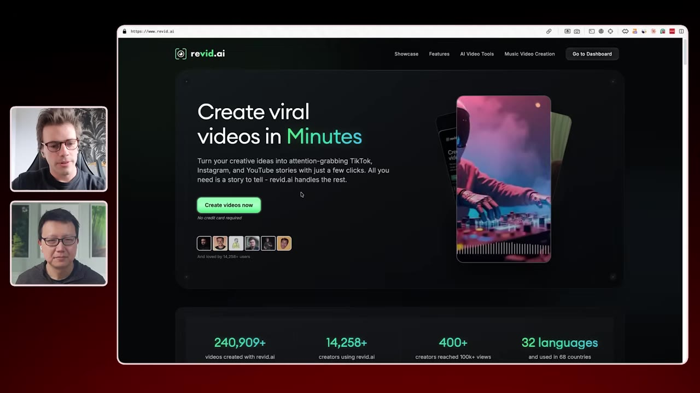
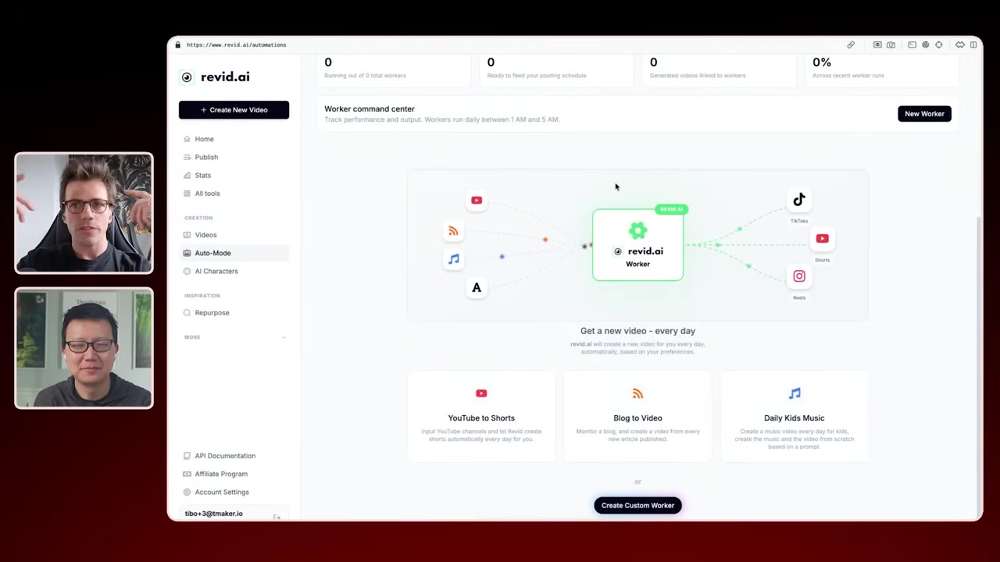
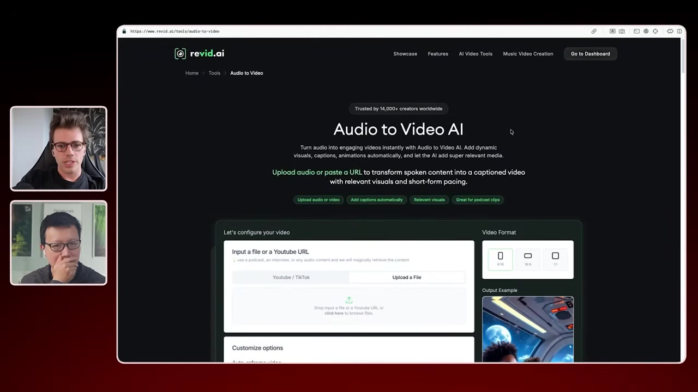
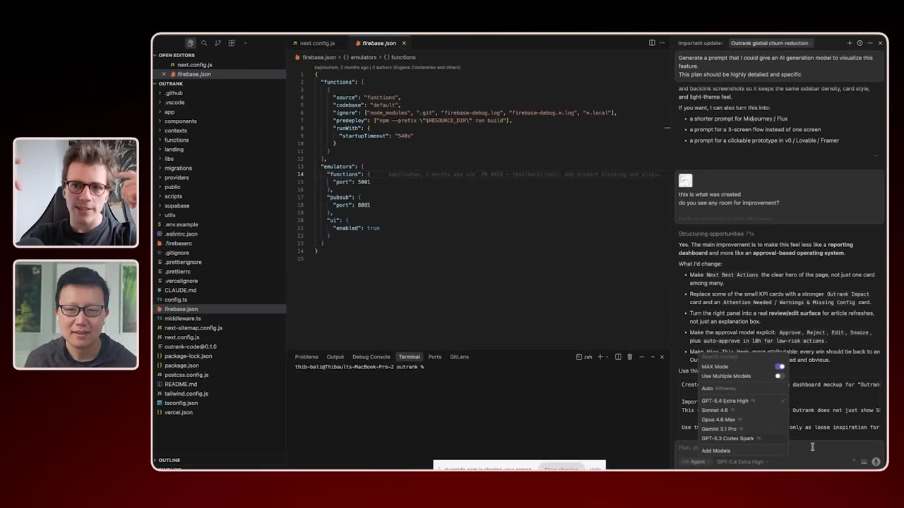
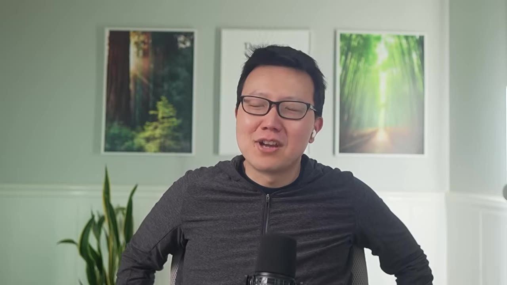

How a Solo Founder Bootstrapped 5 AI Products to $1M+/Month
Tibo Louis-Lucas runs five AI products past $1M/month from France with a tiny team — Rabbit (AI video shorts) does ~$600k/mo with about four people, Outrank (SEO) is closing in. His playbook: validate with revenue, not vanity; when users twist your product into something else, follow them; rank with a landing page per tool; charge $50–100/mo; and ship in quantity until one sticks.
Creator: Peter YangRuntime: 44 minVideo published: April 26, 202612.6K views when summarized
Five AI products past $1M/month — Rabbit (AI video shorts, ~$600k/mo with ~4 people) and Outrank (SEO) lead. He runs them like a portfolio: today's smallest bet can become the biggest, so he keeps starting new ones.
Your job is to validate, not sell. The #1 mistake is wanting to be right more than wanting to be successful, so you force the sale and miss the bigger thing users are pointing at — that's how Typeframe became Rabbit. Charge from day one or there's nothing to measure.
SEO is his top channel and it is not dead. Build domain authority (hard below DR~20, which is why Outrank's backlink marketplace matters), then a dedicated page per tool — an AI snippet can summarize a blog post but can't replace an actual tool.
One person can now do the work of 20, so a tiny team pivots fast. He builds in Cursor, swapping whichever model is best that week, has AI write the spec, and discards ~half of them outright rather than fight to redirect them.
Price $50–100/mo: high enough for good customers and low churn, low enough nobody asks for a quote. Get monthly churn under ~20% before spending on acquisition. And ship in quantity — 9 products failed, the 10th took off.
01 · The portfolio
Five products past $1M/month
Five AI products, almost all of them on the AI-video and SEO waves. Tibo runs them like a portfolio — you don't put all your money in one stock — and he keeps starting new ones because a small line today can outgrow the biggest one. It's happened before.

The revenue chart: Rabbit (AI shorts, ~$600k/mo with a team of ~4) and Outrank (SEO) on top, SuperX just past $30k/mo, Feather and others underneath — together past $1M/month.00:01:58
02 · Validate, don't sell
Follow the signal
Your job is to validate, not to sell. The typical mistake — Tibo's own, when he acquired Typeframe at $1–2k/mo and started spending money to defend it — is wanting to be right more than wanting to be successful. So you force the sale, and you stop hearing the users telling you the bigger opportunity is somewhere else.
It's easy to lie to yourself off a few tiny validation moments. If there's no revenue and no stickiness in it, there's no business — so charge from day one and let revenue be the proof.00:00:24
When you have a product that's made for one thing and people are actually twisting it to turn it into this other thing, that's usually a very strong signal you have to follow.— Tibo Louis-Lucas
That signal is exactly how the product-video tool Typeframe became Rabbit.
03 · Rabbit
Stitching 5-second clips into real videos
When Tibo did the pivot in 2024, every AI video model only made 5-second clips, and stitching them into something coherent was painful. That's the whole engine: Rabbit splits a long video into scenes and plugs the short sequences together with consistent characters and environments. Each new model that improved AI video made it better, so it took off more than once.

"Create viral videos in minutes" — 240k+ users and 100+ tools on top of that engine: a music video from a Spotify link or your own upload, avatars you can put yourself into, YouTube-to-shorts, and an auto-mode that turns a plugged-in channel or blog into videos automatically.00:05:24
04 · Talk to users, ship experiments
A firehose of feedback
The way to find what to build is a constant communication channel with users. On Tweet Hunter, his first hit, the in-app support button dumped straight into his Twitter DMs — overwhelming, but it meant he heard every bug, pain, and bit of friction firsthand. That's how you understand the core problem. Around it he ships a ton of tiny one-page tools just to see if anyone uses them.

Rabbit's auto-mode command center — the kind of depth that comes out of listening to how people actually use the product, not guessing.00:14:28
Where ideas come fromLook at the products you already pay for and build a more specific version for your own weird use case — if it fits you, it probably fits a lot of other people too. And $10k/month is completely fine: that's freedom — no boss, enjoy life — not failure.
05 · SEO that survives AI
A landing page per tool
People keep calling SEO dead. It's his #1 acquisition channel — a recurring flow of people who actually want what you do — and you can hack your way to $5–10k/mo by other means, but to grow past that you need something sustainable. Two parts. First, domain authority: you can't rank a new domain below DR~20, which is exactly why Outrank's backlink marketplace is valuable. Second, the AI snippet on Google will eat your blog posts — but it can't replace a tool.

A dedicated page for every use case ("Audio to Video AI" and so on). An AI snippet can summarize a blog post; it can't answer "audio to video" with an actual tool, so every page is AI-resilient and another shot at ranking. For keywords, type "AI video tools for…" into Google and build a page for each autocomplete. He gave up on "AI video" — too competitive — and goes after the nicher terms.00:23:54
06 · Running five businesses lean
One person, the work of 20
A few contractors, kept very lean. Tibo is convinced one person now does the work of 20 versus five years ago, and the real payoff is pivoting: fewer people to talk to, faster to adopt a new tool, far easier to change direction. He's done the other version — a 20-person team for one product — and the insane energy it takes to convince people one by one that the new direction is right, going from the nice boss to the guy with no vision, is why he won't do it again.

Building in Cursor, swapping whichever model is best that week — GPT-5.4 for the complex logic, Gemini 3.1 Pro for UI (two weeks earlier it was Opus). He has the AI write the spec, and there's a ~50% chance he discards it outright rather than fight to redirect it, then starts over. Sometimes he has AI generate an image preview of a feature before building it, just to see it.00:31:28
07 · Price premium, obsess over churn
Tibo prices backwards: he finds an idea he can charge $50–100/month for, then adapts the product — the AI usage, the scope — to fit that number. That band is the sweet spot. Low enough that nobody asks for a quote before subscribing, high enough that you get quality customers and low churn.
The $9–20/month tier puts you in the position of a cheap product: people who churn constantly and DM you all day about the shitty product. He'd rather be the premium one. And the bar before you spend on acquisition: monthly churn under ~20% (he'd want 5% pre-AI, but people hop between AI products now; 40% means a subscriber lasts two months). A metric called max MRR combines your churn and acquisition and caps how high your revenue can ever climb — high churn means you'd need an unsustainable amount of acquisition to grow, so fix the churn first.00:36:00
08 · Quantity beats quality
Ship until something sticks
For four months Tibo shipped one new product a week: landing page, tweet, watch the traction. No traction, next product; traction, build it and onboard the signups. Nine failed and got no attention. The tenth took off. Treat every release as an experiment — fine if it works, fine if it doesn't, go to the next. You can't predict the winners; his own surprised him.

He used to think quality was above everything. He was wrong: across a series of many products, the best one beats anything you'd get polishing a single product — the same result as the Harvard experiment where the class told to make 10 essays produced better work than the class told to perfect one.00:41:00